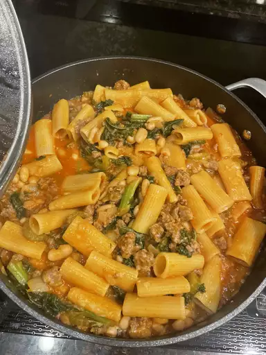

Pasta Fazool

Description
Pasta fazool is classic Italian American comfort food. This recipe works with any sausage, but I like the fennel and anise flavors of sweet Italian sausage with the beans. A hearty soup that's fast and easy to put together.
Ingredients
- 1 tablespoon olive oil
- 12 ounces sweet bulk Italian sausage
- 1 stalk celery, diced
- 1/2 yellow onion, chopped
Directions
Step 1
Step 2
Step 3